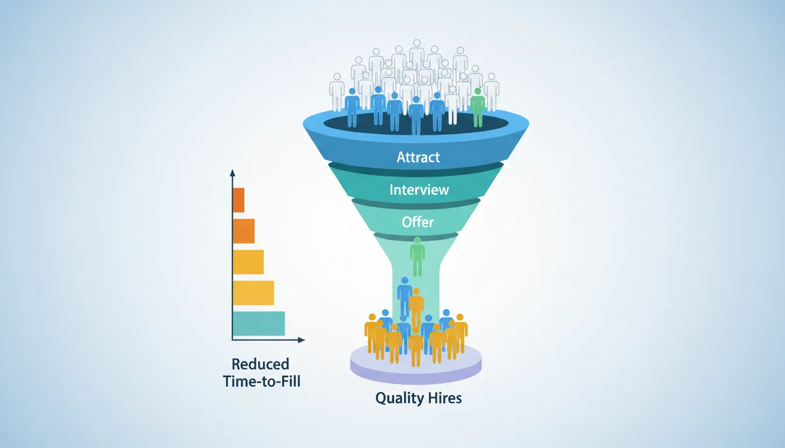
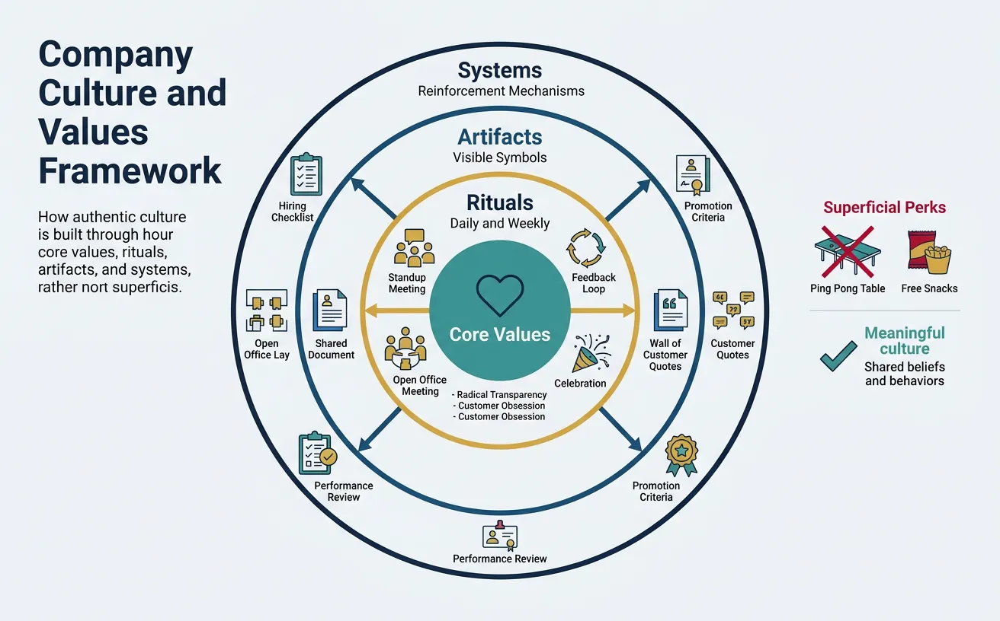
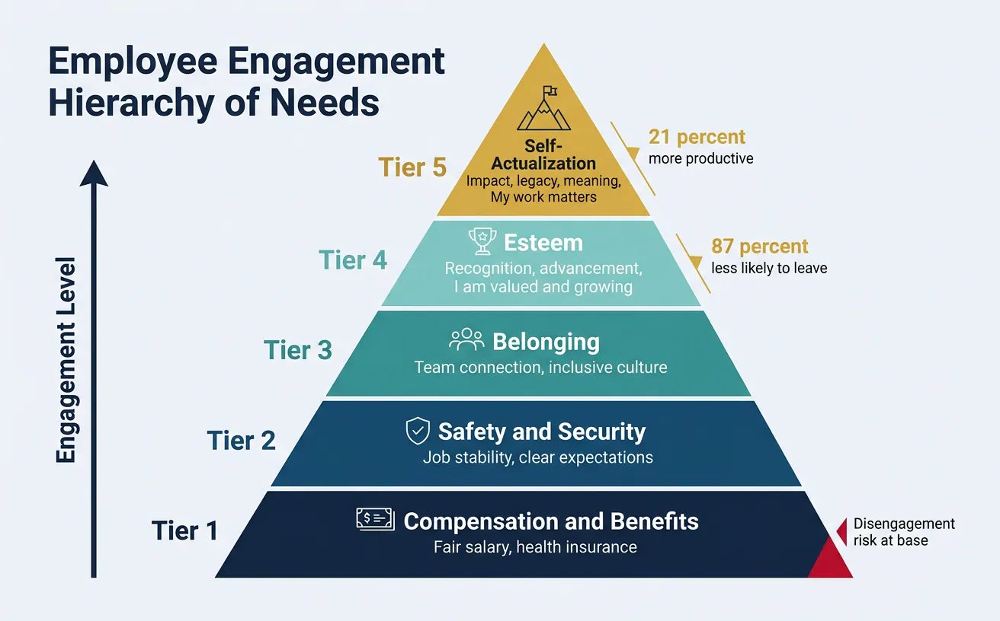
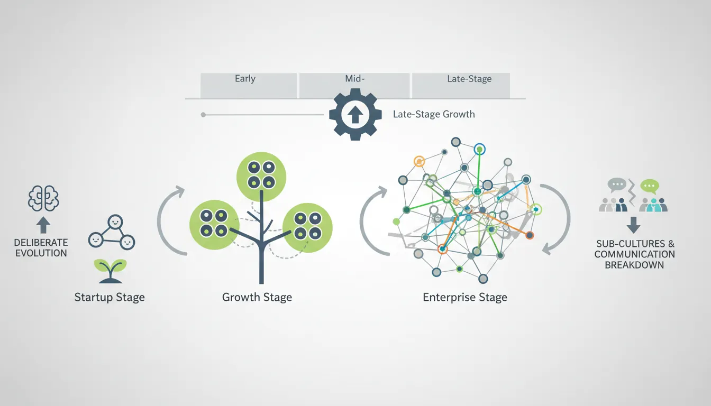

1. Introduction
Culture eats strategy for breakfast. This guide covers how to attract top talent, build a compelling culture, and create systems that keep your team engaged and performing at their best.
Complete Startup Journey
Ideation & Opportunity Recognition
Problem discovery, market gaps, idea generation frameworksIdea Validation & MVP Prototyping
Customer discovery, landing pages, prototype testingBusiness Models & Canvas
BMC, lean canvas, revenue models, value propositionsLean Startup Methodology
Build-measure-learn, pivoting, validated learningFundraising & Financial Modeling
VC, angels, SAFE notes, cap tables, financial projectionsBuilding Your Founding Team
Co-founder selection, equity splits, team dynamicsHiring & Company Culture
Recruiting, culture building, OKRs, team scalingScaling Operations & Growth Hacking
Growth loops, viral mechanics, operational scalingMarketing Campaigns & Digital Growth
CAC/LTV, digital marketing, positioning, channelsLegal, Financial & Risk Foundations
Entity structure, IP, compliance, burn rate managementData-Driven Decision Making
SaaS metrics, NPS, analytics dashboards, A/B testingExit Strategies & Investor Pitches
Valuations, pitch decks, M&A, IPO preparationStartup Ecosystem & Networking
Accelerators, mentors, communities, ecosystem mappingInnovation, Technology & Future Trends
Emerging tech, AI/ML, deep tech, future marketsCapstone Projects & Portfolio
Comprehensive startup plan, portfolio presentation2. Talent Acquisition
Your first hires will define your company's DNA. In early-stage startups, one bad hire can set you back months; one great hire can be transformative. The goal isn't just to fill seats—it's to build a team that amplifies each other.

Your first 10 employees will hire the next 90. They establish standards, processes, and culture. Optimize ruthlessly for quality in early hires—speed matters less than getting the right people.
Sourcing Candidates
The best candidates aren't actively job hunting. You need to hunt them.
| Source | Quality | Cost | Best For |
|---|---|---|---|
| Referrals | ⭐⭐⭐⭐⭐ | Low ($1-5K bonus) | All roles, especially senior |
| Direct Outreach | ⭐⭐⭐⭐ | Medium (time-intensive) | Specific skills, passive candidates |
| Job Boards (LinkedIn, Indeed) | ⭐⭐⭐ | Medium ($200-500/posting) | Volume hiring, junior roles |
| Recruiters | ⭐⭐⭐⭐ | High (20-25% of salary) | Executive search, hard-to-fill |
| University/Bootcamps | ⭐⭐⭐ | Low | Entry-level, interns |
| Community/Events | ⭐⭐⭐⭐ | Medium (time + event cost) | Culture fits, specialists |
Writing Job Descriptions That Attract A-Players
Anatomy of a Great Job Post:
BAD JOB POST GREAT JOB POST
─────────────────────────────────────────────────────────────
"Seeking rockstar ninja "You'll own our entire
developer with 10+ years customer onboarding flow.
experience in XYZ..." In your first 90 days,
you'll reduce churn by
• Generic requirements 20% and build automated
• No context on impact nurture sequences..."
• Buzzword-heavy
• Specific outcomes
• Clear ownership
• Shows growth opportunity
Hiring Scorecard
Create a structured evaluation scorecard for a candidate. Rate each dimension and download a comparison-ready report.
All data stays in your browser. Nothing is sent to or stored on any server.
Interviewing for Startups
Startup interviews should assess three things: Can they do the job? Will they do the job? Will they thrive here?
The Structured Interview Process
| Stage | Duration | Purpose | Who Conducts |
|---|---|---|---|
| 1. Phone Screen | 15-30 min | Basic fit, interest level, logistics | Recruiter or hiring manager |
| 2. Skills Assessment | 45-60 min | Technical/functional ability | Functional expert |
| 3. Work Sample/Project | 2-4 hours | Real-world problem solving | Team reviews async |
| 4. Culture Interview | 30-45 min | Values alignment, collaboration style | Cross-functional team member |
| 5. Founder/Final | 30-45 min | Vision fit, close the candidate | Founder or exec |
Behavioral Interview Questions
Use the STAR method (Situation, Task, Action, Result) to get concrete examples:
- Ownership: "Tell me about a time you took on something beyond your job description."
- Resilience: "Describe a project that failed. What happened and what did you learn?"
- Collaboration: "Walk me through a disagreement with a colleague. How did you resolve it?"
- Growth: "What skill have you developed in the last year? How did you learn it?"
- Judgment: "Tell me about a time you had to make a decision with incomplete information."
• Blames others for failures without self-reflection
• Can't give specific examples (vague or hypothetical answers)
• Badmouths previous employers
• Shows no curiosity about your company
• Compensation is the only driver (for early-stage roles)
Onboarding That Sticks
Great onboarding reduces ramp time and increases retention. The goal: make new hires productive and connected within 30 days.
30-60-90 Day Onboarding Plan:
FIRST 30 DAYS: ABSORB
├── Week 1: Context & connections
│ ├── Meet all team members (1:1s)
│ ├── Understand product, customers, competitive landscape
│ ├── Review company history, values, goals
│ └── Set up tools, systems, access
│
├── Week 2-4: Shadow & learn
│ ├── Shadow experienced team members
│ ├── Complete training modules
│ ├── Take on small, low-risk tasks
│ └── 30-day check-in with manager
DAYS 31-60: CONTRIBUTE
├── Own small projects end-to-end
├── Start contributing to team discussions
├── Identify first "quick win" to deliver
└── 60-day check-in: feedback both ways
DAYS 61-90: OWN
├── Take ownership of key responsibilities
├── Propose improvements or new initiatives
├── Mentor newer team members
└── 90-day performance review
3. Defining Company Culture
Culture isn't ping pong tables and free snacks. It's the shared beliefs and behaviors that guide how work gets done when no one's watching.

Creating Authentic Core Values
Good values are specific, memorable, and actionable. Bad values are generic and ignored.
| ❌ Generic Values | ✅ Specific Values | Company Example |
|---|---|---|
| "We value integrity" | "We do the right thing even when no one is watching" | Buffer's radical transparency |
| "Customer focus" | "Customer obsession: start with the customer and work backwards" | Amazon |
| "Innovation" | "Move fast and break things" / "Fail fast, learn faster" | Facebook (early) / Spotify |
| "Teamwork" | "Strong opinions, weakly held" / "Disagree and commit" | Stripe / Amazon |
| "Excellence" | "Simplicity is the ultimate sophistication" | Apple |
Values Definition Exercise
Exercise: Define Your Core Values
Step 1: Each founder writes answers to these questions:
- What behaviors do we admire in colleagues?
- What would we never tolerate, even from a high performer?
- What makes someone successful here vs. elsewhere?
Step 2: Combine and identify 5-7 themes
Step 3: Write each value as a behavior, not an aspiration
Step 4: Test: Would you fire a top performer who violated this?
Culture Building Tactics
Daily Culture Reinforcement:
RITUALS ARTIFACTS SYSTEMS
├── All-hands meetings ├── Culture deck ├── Hiring scorecards
├── Team standups ├── Value awards ├── Performance reviews
├── Friday demos ├── Stories & heroes ├── Promotion criteria
├── Learning sessions ├── Office design ├── Compensation philosophy
├── Celebration ceremonies ├── Swag & merchandise ├── Communication norms
└── Team traditions └── Internal wikis └── Decision frameworks
Culture is reinforced through what you:
• Celebrate (what gets recognized)
• Tolerate (what behavior is accepted)
• Compensate (what is rewarded)
4. Employee Engagement & Retention
Engaged employees are 21% more productive and 87% less likely to leave. Engagement isn't about perks—it's about purpose, growth, and belonging.

The Employee Engagement Framework
Maslow's Hierarchy Applied to Work:
┌─────────────────┐
│ SELF- │ Impact, legacy, meaning
│ ACTUALIZATION │ "My work matters"
├─────────────────┤
│ ESTEEM │ Recognition, advancement
│ │ "I'm valued & growing"
├─────────────────┤
│ BELONGING │ Team, culture, relationships
│ │ "I fit in here"
├─────────────────┤
│ SAFETY │ Job security, fair treatment
│ │ "I won't be fired randomly"
├─────────────────┤
│ BASIC NEEDS │ Salary, benefits, workspace
│ │ "I can pay my bills"
└─────────────────┘
Address from bottom up. You can't motivate with purpose
if people are worried about paying rent.
Retention Strategies That Work
| Strategy | What It Looks Like | Impact |
|---|---|---|
| Career Pathing | Clear progression levels, promotion criteria | Reduces "where am I going?" anxiety |
| Learning Budget | $1-5K/year for courses, conferences, books | Shows investment in growth |
| Meaningful Work | Connect daily tasks to company mission | Provides purpose |
| Autonomy | Ownership over HOW work gets done | Increases motivation |
| Regular Feedback | Weekly 1:1s, continuous feedback | No performance surprises |
| Competitive Compensation | Market-rate pay, equity, transparent philosophy | Removes money as a reason to leave |
Research shows top reasons: (1) Bad manager, (2) No growth opportunity, (3) Better offer elsewhere, (4) Work-life balance, (5) Lack of recognition. Notice: compensation is #3, not #1. Fix the relationship and growth issues first.
5. Performance Management
Performance management isn't annual reviews—it's continuous alignment between individual goals and company goals, with regular feedback and development.
Modern Performance Systems
OKRs (Objectives and Key Results)
OKR Framework:
OBJECTIVE: Qualitative, inspiring goal
"Become the most loved customer support tool"
KEY RESULTS: Quantitative measures of success
├── KR1: Increase NPS from 45 to 65
├── KR2: Reduce average response time from 4hrs to 1hr
└── KR3: Achieve 95% customer satisfaction rating
Cadence:
• Company OKRs: Quarterly, set by leadership
• Team OKRs: Quarterly, aligned to company
• Individual OKRs: Quarterly, aligned to team
Review: Weekly check-ins, monthly progress, quarterly retrospective
OKR Planner
Define one Objective with 3 Key Results and track progress. Download for team alignment.
All data stays in your browser. Nothing is sent to or stored on any server.
The 1:1 Meeting Framework
| Time | Topic | Questions |
|---|---|---|
| 5 min | Personal check-in | "How are you doing? Anything on your mind?" |
| 15 min | Their agenda | "What do you want to discuss?" (employee sets) |
| 10 min | Your agenda | Updates, feedback, context sharing |
| 5 min | Development | "What can I do to help you grow?" |
Compensation & Incentives
Startup compensation typically blends below-market salary with above-market equity potential. Be transparent about this tradeoff.
Startup Compensation Philosophy:
CASH EQUITY BENEFITS
├── Salary (below to at ├── Stock options ├── Health insurance
│ market, depending on │ (ISOs or NSOs) ├── Retirement (401k)
│ stage and funding) ├── RSUs (later stage) ├── PTO policy
├── Bonus (rare early └── Equity refresh ├── Remote flexibility
│ stage, common later) (annual grants) └── Learning budget
└── Commission (for sales)
Equity Guidelines by Role (Early Stage):
• First 10 employees: 0.5% - 2%
• Employees 11-30: 0.1% - 0.5%
• Employees 31-100: 0.01% - 0.1%
These are starting points—adjust for seniority, scarcity, and market.
6. Scaling Culture Alongside Operations
Culture breaks at every growth stage. What works for 10 people doesn't work for 50. What works for 50 doesn't work for 200. Proactively evolve your culture systems.

Culture Challenges by Stage
| Stage | Culture Challenge | Solution |
|---|---|---|
| 1-10 employees | Culture is implicit, undocumented | Write down values before scaling |
| 10-30 employees | First "non-founder" managers hired | Train managers on culture, hire for values |
| 30-100 employees | Subcultures emerge in teams | Cross-team rituals, culture committee |
| 100-500 employees | Communication breaks down | All-hands, internal comms, town halls |
| 500+ employees | Bureaucracy, "us vs. them" | Dedicated culture/people team, listening tours |
Case Study: Netflix Culture Deck
Netflix's 2009 culture deck has been viewed over 20 million times. Key principles:
- "Freedom and Responsibility": Hire adults, treat them like adults, give autonomy with accountability
- "Context, Not Control": Share information so people can make good decisions
- "Adequate Performance Gets a Generous Severance": Only keep exceptional performers
Lesson: Be explicit and unapologetic about your culture. Not everyone will fit—that's okay.
Remote and Hybrid Culture
Remote work requires intentional culture-building:
• Over-communicate: Default to sharing, use async video updates
• Create virtual water coolers: Random coffee chats, social Slack channels
• Document everything: Written culture > osmosis
• Invest in offsites: Quarterly in-person gatherings for bonding
• Respect time zones: Record meetings, avoid "real-time" bias
7. Conclusion & Next Steps
With your team and culture established, you're ready to scale your operations and implement growth hacking strategies.